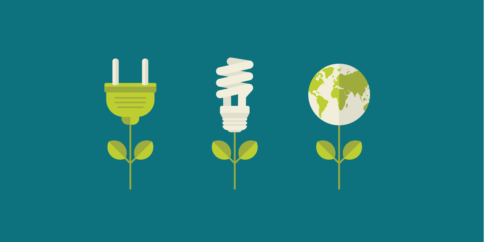
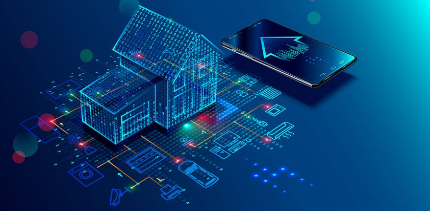

O alto consumo de energia elétrica tem se tornado um problema para a sociedade e para o meio ambiente. A sustentabilidade não é só uma tendência, mas uma necessidade, e a tecnologia é grande aliada nessa batalha.
Talvez o aspecto mais evidente quando se trata de consumo de energia e meio ambiente seja o referente às fontes não renováveis (fontes que são consumidas durante o processo de geração de energia). Assim, é intuitivo dizer que o consumo exagerado de energia implica no maior consumo de recursos (Combustíveis fosseis, Carvão mineral, Gás natural), o que pode comprometer sua disponibilidade.
Economizar no consumo de energia é fundamental para a proteção do meio ambiente. Em muitos casos, a construção de hidrelétricas destrói o habitat de animais em extinção ou animais que só são encontrados naquela região do país.
Estas são algumas boas opções para obter melhor controle no consumo de energia:
Painéis Solares Fotovoltaicos
 O uso de painéis solares fotovoltaicos, que são instalados geralmente no telhado e produzem energia por
meio da exposição aos raios solares. É vantajoso no Brasil, já que o país tem alta incidência solar. De
acordo com Mario Kawano, professor de Engenharia Elétrica da FEI, a energia produzida por intermédio
desses painéis pode ser usada sobretudo para levar energia aos chuveiros, que devem ter os modelos
elétricos substituídos por aqueles que funcionem com aquecedores. “Eliminar o chuveiro elétrico e
substituí-lo por um com aquecedor que funcione com energia solar deve reduzir a conta de luz em cerca de
50%”, estima. A manutenção tem custo quase zero (lavagem com água e sabão apenas, que pode ser feita
pelo proprietário) e a duração do equipamento pode ultrapassar os 20 anos.
O uso de painéis solares fotovoltaicos, que são instalados geralmente no telhado e produzem energia por
meio da exposição aos raios solares. É vantajoso no Brasil, já que o país tem alta incidência solar. De
acordo com Mario Kawano, professor de Engenharia Elétrica da FEI, a energia produzida por intermédio
desses painéis pode ser usada sobretudo para levar energia aos chuveiros, que devem ter os modelos
elétricos substituídos por aqueles que funcionem com aquecedores. “Eliminar o chuveiro elétrico e
substituí-lo por um com aquecedor que funcione com energia solar deve reduzir a conta de luz em cerca de
50%”, estima. A manutenção tem custo quase zero (lavagem com água e sabão apenas, que pode ser feita
pelo proprietário) e a duração do equipamento pode ultrapassar os 20 anos.
Uma grande importância dos painéis solares é o fato de que eles não poluem durante toda a sua vida útil; além de que a poluição ocorrida na fabricação dos equipamentos necessários para a construção dos painéis solares é totalmente controlável
Além de produzir energia para alimentar a rede elétrica do chuveiro, as placas fotovoltaicas podem ainda produzir eletricidade para distribuir entre as tomadas da residência. A instalação das placas deve ser feita por um técnico especializado e são utilizados dispositivos que conectam a produção de energia à rede da distribuidora de energia. Caso a residência produza mais energia do que consuma, este excedente vai para a distribuidora e gera um crédito para o consumidor. A energia produzida excedente pode ainda ser armazenada em baterias e consumida nos dias em que não há sol, por exemplo.
Sistemas de automação
 Outra opção que a tecnologia proporciona para reduzir o consumo de energia são os sistemas de automação residencial. Seu uso é cada vez mais frequente, pois ajudam a reduzir e controlar o consumo elétrico.
Existem varios tipos de sistemas de automação, como o domótico, que é interligado por uma rede de comunicação que pode ser cabeada (possuindo uma central) ou sem fio (este mais utilizado, devido à facilidade de instalação, não necessitando de projeto prévio).
Seu lado sustentável está no fato de possibilitar, por exemplo, o controle de iluminação, som e temperatura, a irrigação automática, o acionamento de persianas e diversos outros sistemas, resultando em economia e eficiência energética.
De acordo com a arquiteta especializada em iluminação Fabíola Wollz, atualmente as principais formas de usar automação residencial, envolvem tecnologias sem fio, pois isto possibilita as instalações tanto em imóveis em construção, quanto naqueles totalmente finalizados e sem preparação específica para novas tecnologias. O custo das tecnologias pode variar, mas à medida que a tecnologia avança, tende a se tornar cada vez mais popular e com preços mais atrativos, impulsionada pela introdução de novos recursos. “Alguns estudos apontam que estes sistemas residenciais proporcionam economia de energia de até 40%”.
Troca de máquinas
Trocar uma máquina antiga por uma com tecnologia de processamento mais atual é uma medida econômica em médio prazo, e não apenas para a conta da energia, mas também para o bem-estar do usuário. Computadores mais antigos demoram a iniciar, os programas e sistemas operacionais antigos não têm suporte, além da impossibilidade da utilização de aplicativos mais recentes.
Dispositivos eletrônicos, por exemplo, frequentemente precisam de recarga, mas a maioria dos consumidores não se preocupa com a eficiência energética deles. Você sabia, por exemplo, que uma máquina antiga consome em média 60W de energia, enquanto um equipamento novo consome apenas 15W? Imagine isso no final de um dia todo de uso. Mudando de dispositivo, portanto, o consumidor diminui drasticamente o consumo de energia, sendo de grande ajuda ao meio ambiente.
Além disso, com a variedade de dispositivos eletrônicos hoje, mudar de máquina significa uma busca de custo-benefício em relação à eficiência energética, desempenho e design. Os modelos atuais são mais finos, mais leves, têm performance otimizada e mais capacidade multitarefa. E já não é tão caro comprar um dispositivo com alta tecnologia de processamento.